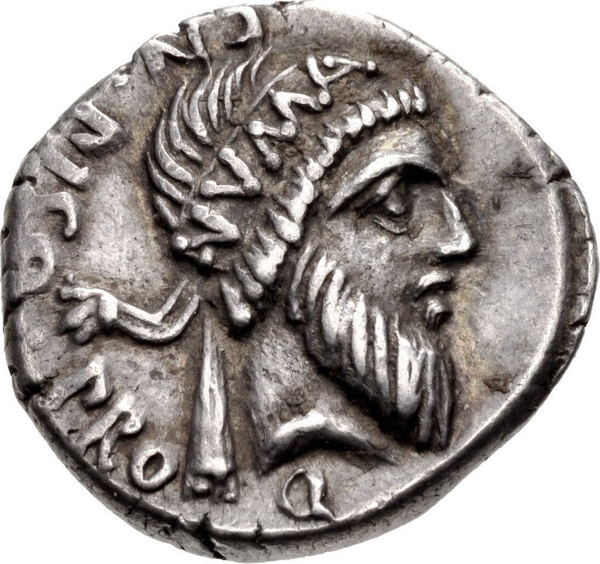

Нума Помпилий
Второй царь Древнего Рима (715 - 673 гг до н.э.)
Биография
Нума Помпилий родился 21 апреля 753 года до н.э. в семье Помпония - сабинянина по происхождению.
После смерти Ромула сенат
остался без единоначалия. Следующего правителя было решено избрать
из числа сабинян, чтобы укрепить их союз с римлянами. Сенаторами был избран Нума Помпилий.
В ходе правления Нумы Помпилия было сделано следующее:
- • Подсчитаны все земли, принадлежащие Риму, осуществлено межевание земли каменными столбами.
- • Учреждены ремесленные цехи, установлены для каждого из них отдельные празднества.
- • Впервые учреждены религиозные культы Весты и Термина.
- • Установлены должности фециалов и понтификов.
- • Проведена реформа календаря
Умер в 673 году до н.э.